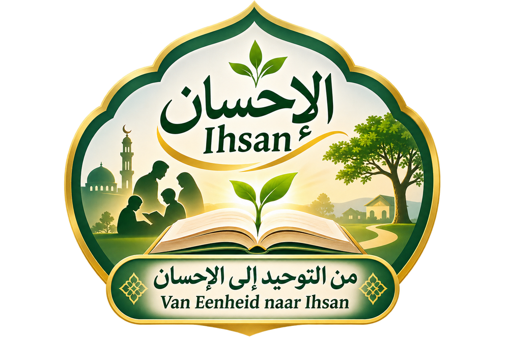

CUR001-K01-L01-G7-NL · v0.2 CANDIDATEIk kan het verschil tussen woorden en gedrag bespreken zonder iemand te beschamen.
Een leerling zegt dat respect belangrijk is, maar onderbreekt anderen. Een klasgenoot spreekt hem rustig aan.
Hoe bespreek je het verschil tussen woorden en daden?
Oefen met een klasgenoot een respectvol gesprek en bespreek de grenzen van advies.
Noem één goede handeling die je vandaag kunt uitvoeren. Een oorspronkelijk Nederlandstalig slotvers is nog te ontwikkelen en te toetsen.
lesson.html?grade=G7&lang=NL